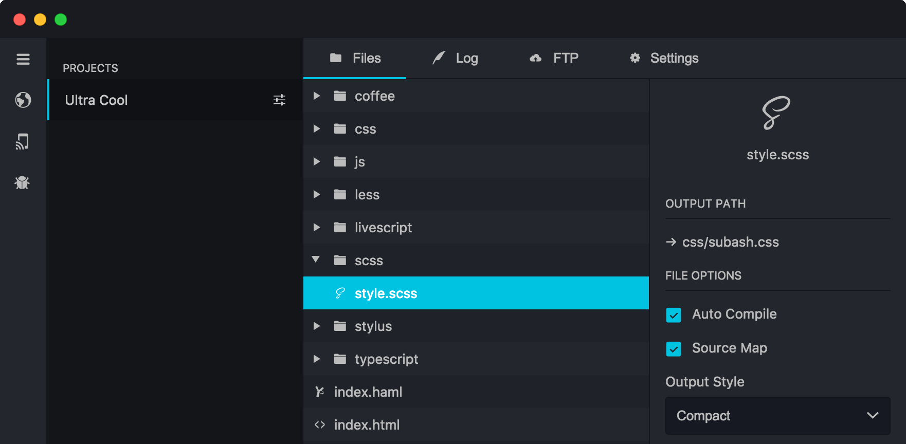

Compile Everything
With CodeFish we can handel all of your preprocessing needs and out of the box you get build support for Sass, Less, Stylus, Cssnext, Jade, Slim and Coffeescript.
- 
The Code Editor That Scales
Download Free Unlimited Trial Shop Extensions Market With CodeFish we can handel all of your preprocessing needs and out of the box you get build support for Sass, Less, Stylus, Cssnext, Jade, Slim and Coffeescript.
CodeFish has a build in color pallette for showing errors. You can fully customize the error checking handling and output from the Command Console.
CodeFish allows you to reload your browser automatically every time you save a file. You can manage what files are compiled during the save process
Thanks for using FishHead Edit
CodeFish can minify and optimize CSS, javascript & images with just one click. Install and configure your own custom minify features in the setting panel.
CodeFish has Chrome DevTools built into the console do you can use the inspector to remotely debug devices.
CodeFish can export files ready for deployment or It can just upload all the files via FTP or SFTP for you.